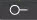

Alarm Configuration
For each point type, except LENUM, you have to two alarm types to choose from.
NOTE: You can also change the current state of a property by commanding it in the Operation/Extended Operations contextual panes. Once you command a property, the status of the command displays for the selected object. If the command fails, the reason for the failure displays so that you can take further action.
In the Alarm Type section, select one of the following and then proceed to the appropriate section:
- Not Alarmable
- Standard Alarm
- Enhanced Alarm
Alarm Characteristics – Standard Alarms
To set up standard alarming, complete the following fields.
Standard Alarm Configuration | |
Item | Description |
High Alarm Limit | The highest value an APOGEE point can reach before the point goes into alarm. For example: a temperature point with a high alarm limit of 100.0 goes into alarm whenever the temperature exceeds 100F. Applies to: LAI and LAO points with standard alarming. |
Low Alarm Limit | The lowest value an APOGEE point can reach before the point goes into alarm. Applies to: LAI and LAO points with standard alarming. |
Alarm Count 2 | Alarm Count 2 (ALMCT2) and the standard alarm counter (ALMCNT) are resident APOGEE points within a field panel that count the number of points in alarm.
|
Print Standard Alarms on BLN |
|
Acknowledge return to normal |
|
Time Delay | This property, an Unsigned type, specifies the minimum period of time in seconds, that the Present_Value must remain outside the band as defined by the High_Limit and Low_Limit properties before a To-OFFNORMAL event is generated or within the same band, including the Deadband property, before a To-NORMAL event is generated. This property is required if intrinsic reporting is supported by this object. NOTE: For multi-state point types this property only displays in the Extended Operations tab. |
Alarm Configuration – Enhanced Alarm Properties
You use the Enhanced Alarm section to define enhanced alarming for a point.
Enhanced Alarm Configuration | |
Item | Description |
Mode Point | For field panels running Pre-APOGEE firmware, a mode point is a virtual LAO point whose value (a number from 0 to 5) indicates the mode the alarmablepoint uses. For each point, you can define a day mode (1), night mode (0), and up to four special modes (2, 3, 4, and 5), for example a warm-up or cool-down mode. For field panels running APOGEE firmware, the mode point should be an LENUM or LDO. In most cases, a Zone Mode Point or the Day/Night point in a TEC can be used to the enhanced alarming mode point. The value of the mode point can be changed by a number of possible system conditions (for example, a Time-Of-Day control schedule, a PPCL program, or the position of a switch). You can drag-and-drop a point from System Browser or the Operations/Extended Operations contextual panes into this field. |
Mode Delay | Applies to analog points. Amount of time, in minutes, required for the system to reach a new set point and stabilize after a mode change. For example, a 15-minute mode delay would allow a room 15-minutes to reach its day temperature set point of 70°F from the night set point of 68°F, before the field panel checks that the new set point is achieved. If the set point is not achieved after the mode delay, the point goes into alarm. |
Level Delay | Applies to analog points. Amount of time, in seconds, the point value must remain in a particular alarm level’s range before the field panel reports an alarm at that level. When the point’s value crosses the alarm level, you may not necessarily want the point to immediately go into alarm; for example, if a room temperature reaches the alarm level momentarily due to the opening of a door, but then returns to an acceptable level when the door is closed. To accommodate this situation and prevent points from toggling in and out of alarm, a level delay is used. |
Differential | Applies to analog points. A buffer, above or below the alarm level, that a point in alarm must cross before the field panel reports the point state has returned to normal. A point fluctuating near the alarm level will continue to be in alarm until the point value crosses the differential level. For example, if a point goes into alarm when it reaches 74 deg F or above and the differential is 2.0, the point does not report as normal until it drops below 72 deg F. |
Mode Tabs | Modes allow you to establish different set points, alarm levels, destinations, and alarm messages for different building conditions or schedules (such as when the building is unoccupied). The time at which a point goes into alarm and where the alarm is routed varies depending on the mode. You set up each mode by selecting the tab for the mode (for example, the Day tab) and then defining the characteristics of the mode. You must check the Enable Alarm mode box in order for the field panel to report alarms while the point is in the mode. |
Set Point: Name  | Applies to analog points. The name of the set point you are assigning to a mode. Type the name of the data point or drag data point from System Browser into this field. You use a set point to adjust a building condition (such as lowering the temperature in a room) for a particular mode. |
Set Point: Value | Applies to analog points. A value (such as a 74°F room temperature) that you want to maintain in your building system. You can assign a set point value to each mode and the point enters different alarm levels as it moves progressively further away from the set point. For example, during Day mode the set point may be 70°F. During Night mode, when occupant comfort levels are not as critical, you may wish to change the set point to 67°F. You can drag-and-drop a point from System Browser into this field. |
Offset | Applies to analog and LENUM points, with some variation between the two alarmable point types: Offset field for an analog point: Represents a value, above or below the set point, that a point must cross in order to be in a particular alarm level range so an alarm can be issued at that level. The offsets define the ranges of alarm levels. For example, for an analog point during Night mode, when monitoring and occupant comfort levels are not as critical, you may wish to alter the offset limits to allow for more temperature fluctuation. Offset field for an LENUM point: Can be set to coincide with values from the state text table for individual LENUM points. The alarm priority set for an LENUM point remains until the value of the LENUM point meets or exceeds the next specified offset. For example, if you choose a state text table that has 6 values, 0 through 5, you can set up the following alarm priorities: associate the value of "0" with the NORMAL state, associate "2" with alarm priority (PRI) 1, and associate "4" with PRI6. For the values that have not been associated with an alarm priority, they will have the same alarm priority as the next lowest value/alarm priority association or the first offset that has an alarm priority associated with it. Your value/alarm priority associations will look like the following: values 0-1 will be associated with the NORMAL state, 2-3 associated with PRI1, and 4-5 with PRI6. For each LENUM point, you can define up to 64 distinct offsets. NOTE: If you do not assign a priority level to the lowest offset value, then the first alarm priority assigned to the next lowest offset value will be in effect for all offset values lower than that offset value and up to the next offset to which an alarm priority has been assigned. In the previous example, had "0" not been set to NORMAL, then offsets 0-3 would have been associated with PRI1. NOTE: If you select a different state text table for a point, you will receive a warning that all offset values for enhanced alarming will be reset. |
Priority | You can assign an alarm priority to each alarm level in each mode. Alarm priorities are defined in System Profile. The priority ranks the severity of a point alarm. For example, priorities can be Life Safety, Fire, Critical, Security, Trouble, and Maintenance. If a point is 2° off setpoint, alarm levels can be set up with a priority of Trouble and if the point reaches 8° from setpoint, it will report with a priority of Critical. Alarm Status and Graphics display alarms in the color assigned to the priority. A point’s priority may also trigger a special control program to run, such as a smoke control program. |